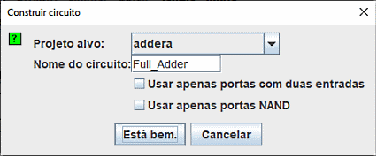

Gerar um circuito
O botão Gerar Circuito irá construir um circuito cujas portas corresponderão às expressões correntes escolhidas para cada saída. As entradas e saídas do circuito serão exibidas em ordem de cima para baixo correspondente à forma como elas aparecem sob as guias Entradas (Inputs) e Saídas (Outputs). De modo geral, o circuito será construído de forma bem clara; na verdade, uma aplicação do módulo de Análise Combinacional do Logisim é posicionar bem circuitos mesmo que mal desenhados. Ainda assim, como acontece com qualquer formatação automática, não irá expressar os detalhes estruturais como um circuito desenhado por um humano faria.

Quando você clicar no botão Gerar Circuito, uma caixa de diálogo irá aparecer solicitando que você escolha em qual projeto desejará colocar o circuito e que nome quer lhe dar. Se você digitar o nome de um circuito já existente, então esse circuito será substituído (após o Logisim perguntar se você realmente quer fazer isso).

Se você digitar o nome de um circuito já existente, então esse circuito será substituído. Logisim vai pedir-lhe que confirme que realmente o quer fazer..
A caixa de diálogo Gerar Circuito inclui duas opções.
- Usar Portas Com Apenas Duas Entradas : especifica que você deseja que todas as portas usadas a partir de então tenham duas entradas. (As portas NOT, é claro, constituem uma exceção a essa regra.)
- Usar Apenas Portas NAND especifica que você gostaria que o circuito fosse traduzido usando apenas essas portas.
Você poderá selecionar ambas as opções, se quiser usar apenas portas NAND de duas entradas.
O Logisim não poderá construir um circuito somente com portas NAND para uma expressão contendo operadores XOR. Essa opção, portanto, será desativada se qualquer das expressões de saídas contiver XOR's.
Próximo: Guia do usuário.